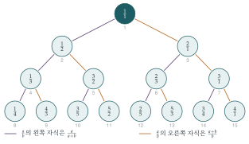

STEP III 2020, 문제 8
다음으로 넘어가기 전에 문제를 먼저 읽어 보자. 이 문제는 OCR에서 내려받을 수 있는 2020년 STEP 문제지 모음(zip 파일)의 STEP III 문제지에 있다: www.ocr.org.uk/Images/696589-2020-past-papers.zip
도입
양의 분수(fraction)를 모두 하나씩 차례로 나열하되, 모든 분수가 정확히 한 번씩 나타나게 할 수 있을까? 불가능해 보인다. 어떤 두 분수 사이에도 무수히 많은 분수가 있으므로, 받아 적을 “다음” 분수라는 것이 없기 때문이다. 그런데도 칸토어(Georg Cantor)는 1870년대에 이것이 가능하다는 것을 보였다. 이는 엄밀한 의미에서 분수가 자연수보다 많지 않다는 뜻이다.
칸토어의 목록은 깔끔하지 않았다. \(\frac12\)뿐 아니라 \(\frac{2}{4}\)도 들어 있어서, 중복된 것은 지워야 했다. 이 문제는 터무니없이 간단한 규칙을 가진 수열로부터 중복이 전혀 없는 목록을 만든다. 이 목록은 2000년에 Neil Calkin과 Herbert Wilf가 발표했지만, 수열 자체는 1858년에 이미 Moritz Stern이 연구한 것이다.
시작하기 전에
무엇이든 증명하기 전에 처음 열다섯 항 정도를 계산해 보자. 비 \(u_n / u_{n+1}\)에 대해 무엇을 알 수 있는가?
수열은 다음과 같이 시작하고 \[1,\ 1,\ 2,\ 1,\ 3,\ 2,\ 3,\ 1,\ 4,\ 3,\ 5,\ 2,\ 5,\ 3,\ 4,\ 1,\ 5,\ \ldots\] 비 \(u_n / u_{n+1}\)는 다음과 같다. \[\tfrac11,\ \tfrac12,\ \tfrac21,\ \tfrac13,\ \tfrac32,\ \tfrac23,\ \tfrac31,\ \tfrac14,\ \tfrac43,\ \tfrac35,\ \tfrac52,\ \tfrac25,\ \tfrac53,\ \tfrac34,\ \tfrac41,\ \ldots\] 모든 분수가 기약분수(lowest terms)로 나타나고, 어느 것도 중복되지 않는다. 문제는 이 현상이 끝없이 계속되며, 모든 양의 분수가 언젠가는 나타난다는 것을 증명하라고 요구한다.
차근차근 풀기
단계 1 홀수 번째가 짝수 번째보다 크다
연속한 두 항은 \((u_{2k}, u_{2k+1})\) 꼴이거나 \((u_{2k+1}, u_{2k+2})\) 꼴이다.
이 두 쌍을 각각 \(u_k\)와 \(u_{k+1}\)로 나타내어 보자. 어느 항이 더 큰가?
\((u_{2k}, u_{2k+1}) = (u_k,\ u_k + u_{k+1})\)이고 \((u_{2k+1}, u_{2k+2}) = (u_k + u_{k+1},\ u_{k+1})\)이다. 모든 항이 양의 정수이므로(간단한 수학적 귀납법(induction)으로 보일 수 있다), \(u_k + u_{k+1}\)은 \(u_k\)와 \(u_{k+1}\)보다 모두 크다. 유일한 예외는 첫 번째 쌍 \((u_1, u_2) = (1, 1)\)인데, \(u_1\)이 직접 정의되므로 이 쌍은 어느 꼴에도 맞지 않는다.■
단계 2 연속한 두 항은 서로소이다
\(d > 1\)이 \(u_{2k}\)와 \(u_{2k+1}\)을 모두 나눈다고, 즉 \(u_k\)와 \(u_k + u_{k+1}\)을 모두 나눈다고 하자. \(d\)는 또 무엇을 나누는가?
\(d\)는 \((u_k + u_{k+1}) - u_k = u_{k+1}\)을 나누므로, \(d\)는 수열에서 더 앞에 있는 연속한 쌍 \(u_k, u_{k+1}\)을 나눈다. 다른 경우도 똑같다. \(d\)가 \(u_k + u_{k+1}\)과 \(u_{k+1}\)을 나누면 \(u_k\)도 나눈다.
따라서 연속한 쌍의 공약수는 더 앞의 쌍으로 넘어가고, 다시 그보다 앞의 쌍으로 넘어가는 식으로 계속된다. 위치는 끝없이 줄어들 수 없으므로(이번에도 정렬 원리(well-ordering)이다), 결국 \(d\)는 첫 번째 쌍 \(u_1 = u_2 = 1\)을 나누어야 한다. 이는 \(d > 1\)일 때 불가능하다. 그러므로 연속한 모든 쌍은 서로소(coprime)이다.■
단계 3 같은 쌍은 두 번 나타나지 않는다
1단계에서 유용한 사실을 알 수 있다. 연속한 쌍 \((a, b)\)를 보면, \(a\)가 홀수 번째 위치에 있는지 짝수 번째 위치에 있는지 알 수 있다. 어떻게 알 수 있을까? 그렇다면 2단계의 의미에서 그 앞의 쌍을 되찾을 수 있을까?
\(a < b\)이면 (1단계에 의해) \(b\)가 홀수 번째 위치에 있으므로, 어떤 \(k\)에 대하여 이 쌍은 \((u_{2k}, u_{2k+1}) = (u_k, u_k + u_{k+1})\)이고, “부모” 쌍 \((u_k, u_{k+1})\)은 \((a,\ b - a)\)이다. \(a > b\)이면 이 쌍은 \((u_{2k+1}, u_{2k+2})\)이고 그 부모는 \((a - b,\ b)\)이다. \(a = b\)이면 1단계에 의해 이 쌍은 맨 첫 번째 쌍 \((1,1)\)이어야 한다.
따라서 첫 번째 쌍을 제외한 연속한 각 쌍은 자신의 부모 쌍과 부모의 위치를 결정한다(이 구조를 그림 1.8.1에서 트리(tree)로 볼 수 있다). 자식이 \(2k\)나 \(2k+1\)번째에 있으면 부모는 \(k\)번째에 있다. 이제 \((a, b)\)가 서로 다른 두 위치에 나타났다고 하자. 그러면 그 부모들은 두 위치에 있는 같은 쌍이 되고, 그들의 부모도 마찬가지이며, 이런 식으로 계속된다. 이를 거슬러 올라가면 결국 \(1\)이 아닌 위치에서 \((1,1)\)을 찾게 되는데, 이는 1단계에 의해 불가능하다.■
단계 4 서로소인 모든 쌍이 나타난다
서로소인 어떤 쌍 \((a, b)\)가 연속한 두 항으로 결코 나타나지 않는다고 하자. 그러한 쌍 중 어느 것을 살펴보아야 할까?
\(a + b\)의 값이 가장 작은 “빠진” 서로소 쌍, 즉 최소 반례(minimal counterexample)를 택하자. 이 쌍은 실제로 나타나는 \((1,1)\)일 수 없으므로 \(a \neq b\)이다(서로소이면서 같으면 \(a = b = 1\)이어야 한다).
\(a > b\)인 경우: 쌍 \((a - b, b)\)는 서로소이고(\(a-b\)와 \(b\)의 공약수는 \(a\)를 나눈다), 그 합 \(a\)는 \(a + b\)보다 작다. 최소성에 의해 이 쌍은 나타나며, 그 위치를 \(k, k+1\)이라 하자. 그러면 \(u_{2k+1} = u_k + u_{k+1} = a\)이고 \(u_{2k+2} = u_{k+1} = b\)이므로, 결국 \((a, b)\)가 나타난다.
\(a < b\)인 경우: 마찬가지로 \((a, b - a)\)가 어떤 \(k, k+1\)에 나타나고, 그러면 \((u_{2k}, u_{2k+1}) = (a, b)\)이다.
어느 경우든 모순이다. 따라서 서로소인 양의 정수의 모든 쌍은 연속한 두 항으로 나타난다.■
(문제에서는 (iv)를 무한강하법(descent)으로 표현한다. 빠진 쌍이 있으면 그보다 작은 빠진 쌍이 생긴다는 것이다. 이는 같은 논증을 반대 방향으로 읽은 것이다.)
단계 5 모든 분수의 목록
모든 양의 유리수(rational number)는 \(a, b\)가 서로소인 기약분수 \(a/b\)로 유일하게 나타낼 수 있다. 4단계에 의해 \((a, b)\)는 연속한 어떤 쌍 \((u_n, u_{n+1})\)으로 나타나므로 \(f(n) = a/b\)이다. 즉 \(f\)의 치역(range)은 모든 양의 유리수이다. 3단계에 의해 이 쌍은 한 번만 나타나고, 2단계에 의해 모든 값 \(f(n)\)은 이미 기약분수이므로, 서로 다른 두 \(n\)이 같은 분수를 줄 수 없다. 그러므로 \(f\)는 양의 정수에서 양의 유리수로의 전단사 함수(bijection)이고, 역함수(inverse)를 가진다.■
돌아보기
무한강하법과 그 역. 공약수와 중복된 쌍은 수열의 처음으로 거슬러 추적했다. 빠진 쌍은 최소 반례를 이용해 앞으로 쌓아 나가며 다루었다.
전단사 함수에는 두 부분이 필요하다. “모든 분수가 나타난다”(전사(onto))와 “어떤 분수도 두 번 나타나지 않는다”(단사(one-to-one))는 별개의 주장이며, 따로 증명했다.
먼저 계산하라. 열다섯 항을 적어 보니 주장을 믿을 수 있게 되었고, 증명을 이끈 부모–자식 구조도 떠올릴 수 있었다.
숨은 수학
양의 분수를 트리 모양으로 배열하자. 맨 위에 \(\frac11\)을 놓고, 각 분수 \(\frac{a}{b}\)에 두 자식, 즉 왼쪽에 \(\frac{a}{a+b}\), 오른쪽에 \(\frac{a+b}{b}\)를 준다. 트리를 한 줄씩 왼쪽에서 오른쪽으로 읽으면 정확히 이 문제의 목록 \(f(1), f(2), f(3), \ldots\)이 된다(그림 1.8.1). 3단계는 모든 분수가 유일한 부모를 가진다는 것이고, 4단계는 모든 분수가 트리 안에 있다는 것이다. 2003년에 Moshe Newman은 트리조차 필요 없다는 것을 발견했다. 목록의 각 분수는 바로 앞의 분수로부터 다음과 같이 계산할 수 있다. \[x_{n+1} = \frac{1}{2\lfloor x_n \rfloor - x_n + 1}.\]

무한의 서로 다른 크기
이처럼 나열할 수 있는 집합을 가산(countable) 집합이라 한다. 분수는 가산인데, 분수가 자연수보다 훨씬 많아 보이므로 이는 놀라운 일이다. 대학 첫 학기에는 칸토어의 대각선 논법(diagonal argument)도 배우게 되는데, 이 논법은 실수(real number)가 가산이 아님을 보여 준다. 즉 실수의 어떤 목록이든 반드시 빠뜨리는 실수가 있다. 따라서 무한에는 정말로 서로 다른 크기가 있으며, 실수는 유리수보다 진짜로 더 큰 무한을 이룬다. 이것은 대학 1학년 과정에서 만나게 될 가장 놀라운 결과 중 하나이다.
Stern 수열
수열 \(u_n\)은 Stern의 이원자 수열(Stern’s diatomic sequence)이며, 다른 곳에서도 여러 모습으로 등장한다. 예를 들어 \(u_{n+1}\)은 각 거듭제곱을 많아야 두 번 사용하여 \(n\)을 \(2\)의 거듭제곱의 합으로 나타내는 방법의 수이다. 이 수열은 Stern–Brocot 트리(Stern–Brocot tree), 그리고 무리수에 대한 최良의 유리수 근삿값을 주는 연분수(continued fraction)와도 밀접하게 관련되어 있다.
사고 기술
두 집합의 크기가 같음을 보이려면 두 집합을 정확히 짝지어라. 즉 목표 집합의 모든 원소가 대응됨(전사)과 어떤 원소도 두 번 대응되지 않음(단사)을 증명하라.
전단사 함수는 유한이든 무한이든 셈의 기초이며, 대학에서 끊임없이 사용하게 된다. 여기서는 두 부분 모두 구조를 출발점까지 거슬러 추적하여 증명했다.
더 도전하기
분수 찾기. 어떤 \(n\)에 대하여 \(f(n) = \frac{3}{5}\)인가? 또 \(f(n) = \frac{5}{3}\)인 \(n\)은? 부모 규칙을 이용해 \(\frac11\)까지 거슬러 올라가 보라.
Newman의 공식. \(x_1 = 1\)에서 시작하여 Newman의 공식이 목록의 처음 열 개의 분수를 만들어 냄을 확인하라.
칸토어의 대각선 논법. \(0\)과 \(1\) 사이의 모든 실수를 소수로 적은 목록이 있다고 하자. 목록의 \(n\)번째 수와 \(n\)번째 자리가 다른 소수를 만들어라. 이것이 왜 목록이 불완전함을 보여 주는가? (\(0.0999\ldots = 0.1\)과 같은 소수에는 어떤 주의가 필요한가?)
가산 합집합. 심화 양의 정수의 모든 쌍 \((m, n)\)의 집합이 가산임을, 양의 정수와의 전단사 함수를 명시적으로 제시하여 보여라. (\(2^{m-1}(2n-1)\)을 시도해 보라.)
더 읽을거리
Neil Calkin & Herbert Wilf, “Recounting the rationals” (American Mathematical Monthly, 2000). 유리수 다시 세기. 네 쪽 분량이며, 전부 읽을 만하다.
Aigner & Ziegler, Proofs from THE BOOK, 제 17장 “Sets, functions, and the continuum hypothesis”(집합, 함수, 연속체 가설). Calkin–Wilf 트리를 다룬다.
Ian Stewart & David Tall, The Foundations of Mathematics (Oxford University Press). 대학 1학년 과정에서처럼 가산성, 칸토어, 실수를 다룬다.